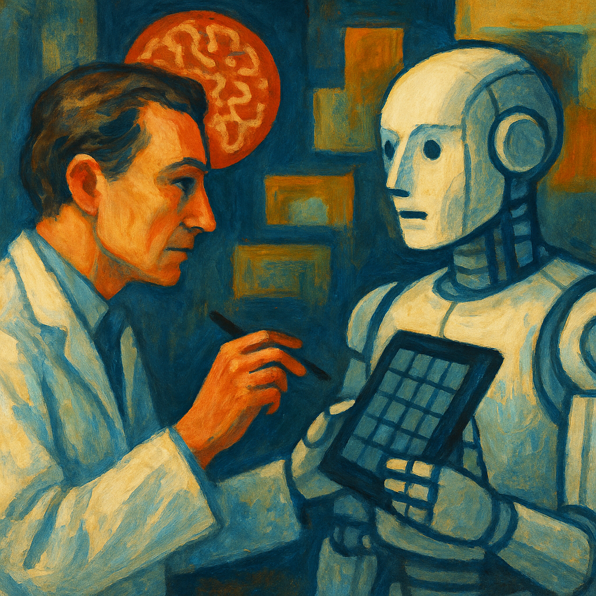
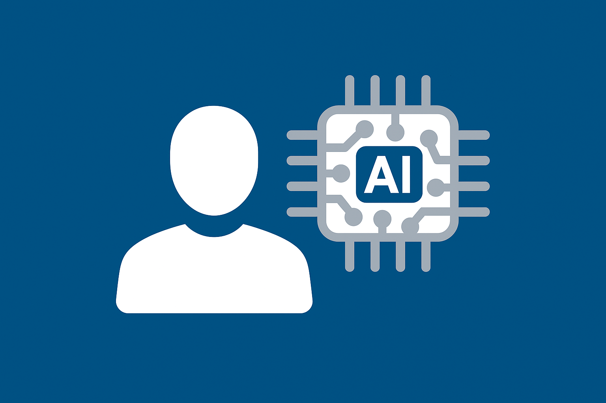

Observatoire de l’Innovation
et du Futur du Travail
Accueil
Publications
Indicateurs
Membres
Thèmes
Tous
(3)
AI
(3)
Emploi
(2)
France
(2)
Innovation
(1)
Tracker
(1)
Nos Publications
La liste des publications de l’observatoire

L’intelligence artificielle au service de l’innovation : une analyse sur données de brevets
AI
Innovation
20 juil. 2025
/files/papers/ai-innov.pdf
Diffusion de l’Intelligence Artificielle en France
AI
France
Tracker
Emploi
10 juil. 2025
/files/papers/ai-tracker.pdf

Exposition à l’intelligence artificielle générative et emploi : une application à la classification socio-professionnelle française
AI
France
Emploi
1 janv. 2024
/files/papers/ai-exposure.pdf
Aucun article correspondant